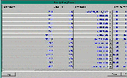

Motor Startup Chains
The Motor Startup Chains control the motors for the system. The chains control the startup sequences, startup timing, and dependencies of motors on the system. The chains also control the drawing of the motors and their conveyors.
The motor startup chains control the sequences, startup timing and dependencies of the motors in the system for the purpose of starting the motors in a systematic way. Spacing out the starting of motors is necessary to prevent an electrical overload. It also provides a means of sounding the warning horn every time a set of motors starts up. Timers are used in motor start-up chains in the Mtrchain Menu and are frequently named with tm and the motor name. When the motor chain is set up properly, all jam and full conditions will shut down sections of the motor chain and will be re-started in order after the horn sounds.
When the auxiliary contact is on (high) for the amount of time specified in the timer preset, the chain is started. When the chain is started, the motors are fired unless the individual motor is disabled. Both the motors and conveyor parts for the chain are drawn in a running state.
If the auxiliary contact is off, the motors in the motor chain are unfired unless a Go Now bit is on for the individual motor. Both the motors and conveyors for the chain are drawn stopped.
Click Here to see a screen shot of this menu. 
Many of the fields in the Motor Startup Chains table are pull-downs into another table from which to make a selection. The fields named, Motors Chained, and Motor Aux, pull down into the Parts database from where to select a motor name. Heater Bit, Enabled and Go Until also pull down into the Parts database for part selection. The Timer Name and Run Timer Name field likewise pull down to the Timers menu. To view the individual timer record, use the pull-down symbol while the timer name is highlighted.
When creating a motor chain, type in the Motor Name and pop up the appropriate Aux. Refresh Triggers by pressing Esc to exit the Motor Chain menu. Cursor down to and select Triggers. Highlight Refresh Triggers and press the Enter key. Although you do not see a change, when returning to the Motor Chain menu, you will see the timer fields filled in and automatically generated.
Fields:
Motor Name - the name of the first motor in the chain
Motor Ndx - automatically generated index FortnaPlus© uses to reference this part
Timer Name - the name of the timer FortnaPlus© uses to space out the startup of the motors
Timer Preset - the preset value for the named timer
Motor Chained1 - the name of the second motor or conveyor part in the chain
Motor Chained2 - the name of the third motor or conveyor part in the chain
Motor Chained3 - the name of the fourth motor or conveyor part in the chain
Motor Chained4 - the name of the fifth motor or conveyor part in the chain
Motor Chained5 - the name of the sixth motor or conveyor part in the chain
Motor Chained6 - the name of the seventh motor or conveyor part in the chain
Motor Chained7 - the name of the eighth motor or conveyor part in the chain
Motor Chained8 - the name of the ninth motor or conveyor part in the chain
Motor Chained9 - the name of the tenth motor or conveyor part in the chain
Motor Chained10 - the name of the eleventh motor or conveyor part in the chain
Motor Aux - the name of the auxiliary contact the chain is dependent on
RUN Timer Name - times as long as the motor runs
GoUntil - the eye at the end of a belt that signals the motor under the belt to stop
Enabled - the control relay that will drop out if the motor is not running
Horn - must have either a horn or no horn popped up
Reset Horn - a boolean field, seldom used, to reset the horn
Heater Bit - the motor aux
Heater Error - an error, automatically generated, to notify of the Heater Bit dropping out
Heater Debounce - The Partname that is the AUX contact of the motor.
Debounce Value - The number of times through the loop before declaring the Heater tripped.
TO CREATE A MOTOR CHAIN
1. Determine the starting order of the conveyors. This must be done so that product does not travel from a running conveyor to a conveyor that has not yet started.
2. Record 0 in this menu should be "INVALID."
3. Start with record 1. In the Motor_Name column type the name of the first
motor to be started.
This must be typed exactly as it appears in the Parts Database.
4. Scroll over to the field titled Motor_Aux. Typically, for the first motor in the chain, a bit must be used that is set by a trigger or a latch bit in the Jamzones. Pull down that field. This will display the "Parts Database". Scroll through this menu until the proper bit is selected, then press enter. This will display that bit in the menu. This will not always be a motor aux bit.
5. Scroll left to the Motor_Chained1 column. This is a pull down into Parts Database. Press enter and scroll to the "C " name of that piece of conveyor. For example if the motor that is starting the motor chain is MS100. The conveyor piece would be called C100.
6. The "C" pieces are the graphic displays. They are used to graphically display the current state of the system. They are linked to the real motor inputs when they are put in the motor chain.
7. Often several motor starters are hard wired together. So when the first starter is pulled in the other starters are pulled in also. In that case the first motor is put in the Motor_Name field and the "C" pieces for every motor in the hardwired chain are put in the Motor_Chained fields.
8. Type the next motor into the Motor_Name field. In the Motor_Aux field pull down the AUX contact of the previous motor. The software will fill in the Timer_Name field when Refresh Triggers is hit. Pull down the "C" pieces to the Motor_Chained fields.
9. Continue in this manner until all motors are in the menu.
10. After all motors and aux contacts have been entered, press escape, then scroll to "Refresh Triggers". Press enter, this will create all the timers and display them in the proper places.
11. The timers must be set up so there is a slight delay on each starter. Default value is one second. However in some cases a longer time is required. For example in the case of a sorter ten seconds may be required to allow the sorter time to ramp up to speed. These times can be easily adjusted in the field. To edit the timer, double right click. This will take you to that timer. Scroll to the field "Preset_Value" and type the number of seconds delay for that motor. Page up and page down will display all the timers.
12. To test the motor chain offline it will be necessary to use the motor starter bit in the Motor_Aux column. Since there is no actual I/O connected to the PC the aux contacts will not turn on.
13. In cases where zones may be started individually, the Motor_Aux bit will not be a motor aux but will be I/O controlled by a trigger. Set up the motor chain initially with motor aux contacts and test it to see that it works. Then insert the triggers into the Motor_Aux column to start the sections that will be started and stopped separately.
14. When there are sections of conveyor that will shutdown due to jam or full conditions or a trigger that shuts down pieces of conveyor a dummy motor must be created. This is done so that when the conveyor starts back up, the horn will sound before any motors start up.
15. To create a dummy motor, a part must be added to the Parts Database and must have "real" I/O. Its I/O will be a memory bit that the machine owns. It should be called
"DUMMYMSXXX" where the number will correspond with the first motor that will be shut down. Insert this dummy motor just ahead of the motor to be shut down. Create a timer for it and select it in the Motor_Aux bit for the motor to be shut down.
Click Here to return to top of screen.
Copyright © 2001 Fortna Inc. All rights reserved.